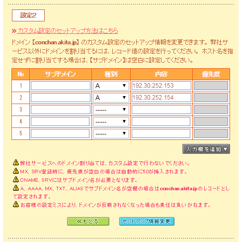
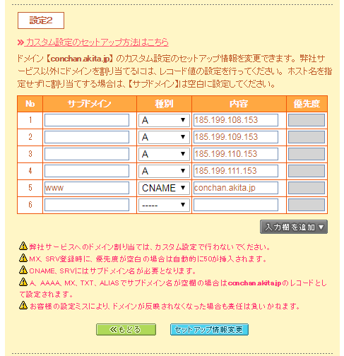
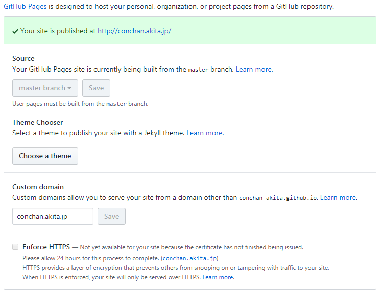

HPをhttps接続できるようにした(2018年12月2日)
こんにちは。
コンちゃんこと佐々木です。
当サイトをhttps接続できるようにしました。
アドレスバーをご覧いただくとhttps～ってなっていると思います。
当サイトはGitHub Pagesを使用していますが、運営当初はGitHub PagesがSSL未対応で、外部サービスの利用などで工夫しないとSSL化できませんでした。
それがですね、いつの間にか公式で対応していまして、昨日気づいたのでさっさとhttps接続OKにしました。
設定はちょいとつまづきました。
まず、GitHub Pages側のIPアドレスが変わっていたので修正します。

↑before
↓after

ついでにCNAMEを追加しました。
www.conchan.akita.jpでも当サイトにたどり着きます。

これでEnforce HTTPSにチェック入れられる、と思ったら待ち時間あり。
ちょいと待ったらチェック入れられるようになりました。
やっとhttpsで接続できますが、なぜかChromeで「保護されていない通信」と出る。
開発者ツールで確認すると「ERR_CERT_COMMON_NAME_INVALID」エラー。
Custom domain項を削除してもう1度登録してみたり混在コンテンツ(httpでの読み込み箇所)の有無確認したりしたけどダメ。
そのうちに眠くなったので寝るなど。
起きて、治ってるかな～と確認するも「保護されていない通信」と出る...
だがエラーが変わっている。
「Active content with certificate errors」...はて？
検索すると、開発者ツールのApplicationタブからClear site dataしろとのことで、やる。
これで解決しました！！
いやーよかった。
最後に参考リンクを列記しておきます。
Securing your GitHub Pages site with HTTPS
Troubleshooting custom domains
Setting up an apex domain and www subdomain
Active content with certificate errors の対処方法